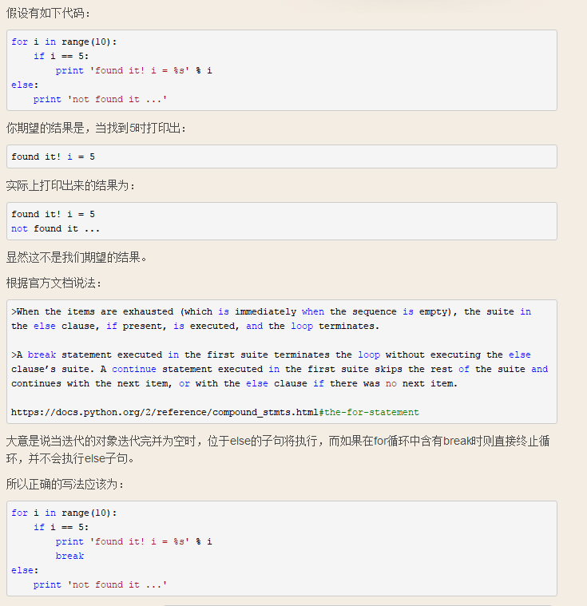

文章汇总：https://www.cnblogs.com/dotnetcrazy/p/9160514.html
多图旧排版：https://www.cnblogs.com/dunitian/p/9103673.html
VSCode设置python3的开发环境（linux下默认是python2）https://www.cnblogs.com/dotnetcrazy/p/9095793.html
欢迎提出更简单的语法~（文章中案例有两个福利哦，一个是养生，一个是人工智能[ 密码：fqif]）
先说下感觉，python的编程有点JavaScript的感觉(比如：'和“有时候不区别)，又感觉像外国版的易语言，整个过程像读书一样，比如一个元素不在列表之中==> for item not in lists。使用它做个大点的项目一定要先规定好编程风格，不然能让人崩溃的。先不深究，后面会继续深究。。。（Python2我就不讲了，官方推荐使用Python3）
Python官方是推荐使用_来间隔单词，但一般开发人员都是以各自主语言的命名来定义的，这个就各人爱好了，不过团队一定要统一。
命名规则：总的原则就是 见名知意，一般都是 驼峰命名法，纯Python的话推荐用 _连接单词
扩充：Python的关键词可以自己打印一下：
import keyword
print(keyword.kwlist)
# Python标识符区分大小写的案例
temp="xxx"
tEmp="==="
print(temp+tEmp)
%%script csharp
//CSharp标识符区分大小写的案例
var temp = "xxx";
var tEmp = "===";
Console.WriteLine(temp + tEmp);
#单行注释 输出
print("Hello World!")
'''三个单引号多行注释：
print("Hello World!")
print("Hello World!")
print("Hello World!")'''
"""三个双引号多行注释：
print("Hello World!")
print("Hello World!")
print("Hello World!")"""
C、Java、Net都是//注释一行，/**/注释多行
Console.WriteLine("小明同学");
// Console.WriteLine("小明同学"); 注释一行
/*Console.WriteLine("小明同学");
Console.WriteLine("小明同学"); 注释多行*/
#定义一个变量并输出
name="小明"
print(name)
可以用var来进行类型推断，eg：var name="小明";
%%script csharp
var test = "123";//定义一个变量
Console.WriteLine(test);//输出这个变量
print("dnt.dkill.net/now",end='')
print("带你走进中医经络")
print("dnt.dkill.net/now",end="")
print("带你走进中医经络")
如果字符串内部既包含'又包含"怎么办？可以用转义字符\来标识
#如果字符串内部既包含'又包含"怎么办？可以用转义字符\来标识
print("I\'m \"OK\"!")
r''表示''内部的字符串默认不转义
# 如果字符串里面有很多字符都需要转义，就需要加很多\，为了简化，Python还允许用r''表示''内部的字符串默认不转义
print(r'\\\t\\')
'''...'''的格式表示多行内容
#如果字符串内部有很多换行，用\n写在一行里不好阅读，为了简化，Python允许用'''...'''的格式表示多行内容
print('''我请你吃饭吧～
晚上吃啥？
去厕所，你说呢？''')
扩：Python提供一种以空格分隔的方式：
print("I","Love","You")
python输出多个重复字符，不需要自己手打N个*或者for循环输出多个重复字符，eg：print("x"*10)
print("x"*10)
如果你不太确定应该用什么，%s永远起作用，它会 把任何数据类型转换为字符串
%c 字符
%s 通过str() 字符串转换来格式化
%o 八进制整数
%x 十六进制整数（小写字母）
%X 十六进制整数（大写字母）
%e 指数（小写'e'）
%E 指数（大写“E”）
%f 浮点实数
%g ％f和％e 的简写
%G ％f和％E的简写下面来个输入输出的简单的 案例吧：打印一张名片，Name:毒逆天，Gender：男
print("Name:%s,Gender:%s"%(name,gender))【注意引号后面没有，哦】
#定义一个变量name,用户输入将赋值给name
name=input("请输入用户名:")
#定义一个变量gender，用户输入将赋值给gender
gender=input("请输入性别:")
#多个变量输出
print("Name:%s,Gender:%s"%(name,gender))
输出用：Console.Write Console.WriteLine
%%script csharp
Console.Write("dnt.dkill.net/now");
Console.WriteLine("带你走进中医经络");
C#用@来转义字符，不管你是转义字符还是换行，通杀
%%script csharp
Console.WriteLine(@"\\\\\\\");
%%script csharp
Console.WriteLine(@"我请你吃饭吧～
晚上吃啥？
去厕所，你说呢？")
Csharp输入输出的简单的 案例：打印一张名片，Name:毒逆天，Gender：男
C#：Console.WriteLine($"Name:{name}，Gender:{gender}");
Console.WriteLine("请输入用户名：");
var name = Console.ReadLine();
Console.WriteLine("请输入性别:");
var gender = Console.ReadLine();
Console.WriteLine($"Name:{name}，Gender:{gender}"); //推荐用法
Console.WriteLine("Name:{0}，Gender:{1}", name, gender); //Old 输出
# 求和
num1=input("输入第一个数字")
num2=input("输入第二个数字")
print("num1+num2=%d" %(int(num1)+int(num2)))
C#：该案例推荐使用 int.TryParse，我这边就用常用的Convert系列了【支持类型比较多】
Convert.ToInt64(),Convert.ToDouble()，Convert.ToString()...
//类型转换
Console.WriteLine("输入第一个数字：");
var num1 = Console.ReadLine();
Console.WriteLine("输入第二个数字:");
var num2 = Console.ReadLine();
Console.WriteLine($"num1+num2={Convert.ToInt32(num1) + Convert.ToInt32(num2)}");
num=9
print("num=9，下面结果是对2的除，取余，取商操作：")
print(num/2.0)
print(num%2.0)
print(num//2.0)
print("2^3=%d"%2**3)
Python3现在这样写也行，推荐和其他语言写法一致（不然你用惯了Python,切换的时候会出事的）
num=9
print("num=9，下面结果是对2的除，取余，取商操作：")
print(num/2)
print(num%2)
print(num//2)
print("2^3=%d"%2**3)
+= -= *= /= %= **= //= 这些就不用详说了吧？
举个例子：c += a 等效于 c = c + a
注意下，Python中不见得等效，Python都是引用，这个先不说后面说
C#常用数学方法都在Match类中
%%script csharp
var num=9;
Console.WriteLine("num=9，下面结果是对2的除，取余，取商操作：")
Console.WriteLine(num/2.0);
Console.WriteLine(num%2.0);
Console.WriteLine(num/2);
Console.WriteLine(Math.Pow(2,3));
age=19
if age>=18:
print("成年了")
再来个嵌套的：注意哦~ else if 在python里面 简写成了：elif
age=24
if age>=23:
print("七大姑曰：工作了吗？八大姨问：买房了吗？异性说：结婚了吗？")
elif age>=18:
print(age)
print("成年了哇")
else:
print("好好学习天天向上")
结合前面知识，再来个案例：
input_int=int(input("请输入（1-7)"))
#if后面的:,tab格式,else if 现在是elif
if input_int==1:
print("星期一")
elif input_int==2:
print("星期二")
elif input_int==3:
print("星期三")
elif input_int==4:
print("星期四")
elif input_int==5:
print("星期五")
elif input_int==6:
print("星期六")
elif input_int==7:
print("星期日")
else:
print("别闹")
C# if else 单行代码可以不用写括号
int age = 24;
if (age >= 23)
Console.WriteLine("七大姑曰：工作了吗？八大姨问：买房了吗？异性说：结婚了吗？");
else if (age >= 18)
{
Console.WriteLine(age);
Console.WriteLine("成年了哇");
}
else
Console.WriteLine("好好学习天天向上");
NetCore现在推荐，如果是单行，建议Code和if else写在一行：
int age = 24;
if (age >= 23) Console.WriteLine("七大姑曰：工作了吗？八大姨问：买房了吗？异性说：结婚了吗？");
else if (age >= 18)
{
Console.WriteLine(age);
Console.WriteLine("成年了哇");
}
else Console.WriteLine("好好学习天天向上");
num=10
while num>0:
print(num)
num-=1
i=1
#输出一个三角形
while i<6:
j=1
while j<=i:
print("*",end="")#不换行输出
j+=1
print("")#下一行
i+=1
# 1~100求和
i=1
sum=0
while i<=100:
sum+=i
i+=1
print(sum)
用法差不多，来个案例
%%script csharp
int index = 1;
int sum = 0;
while (index <= 100)
{
sum += index;
index++;
}
Console.WriteLine(sum);
其实Python分为 可变类型（list，dict,set等等）和 不可变类型（int，str，tuple等等）
像数字这类的是不可变类型（后面会继续说）所以结果往往和你预期的不一样哦～看个案例：
# python 中，变量是以内容为基准而不是像 c 中以变量名为基准，所以只要你的数字内容是5
# 不管你起什么名字，这个变量的 ID 是相同的，同时也就说明了 python 中一个变量可以以多个名称访问
a=5
b=5
print(id(a))
print(id(b))
print(a is b)
a+=1
print(id(a))
print(id(b))
print(a is b)
你还可以看看这篇文章：Python没有 ++/-- 参考文章（点我）
# 基础循环：后面会讲range
for i in range(5):
print(i)
i+=1
#while循环一般通过数值是否满足来确定循环的条件
#for循环一般是对能保存多个数据的变量，进行遍历
name="https://pan.baidu.com/s/1weaF2DGsgDzAcniRzNqfyQ#mmd"
for i in name:
if i=='#':
break
print(i,end='')#另一种写法：print("%s"%i,end="")
print('\n end ...')
foreach (var i in name)
%%script csharp
var url = "https://pan.baidu.com/s/1weaF2DGsgDzAcniRzNqfyQ#mmd";
foreach (var item in url)
{
if (item == '#')
break;
Console.Write(item);
}
Console.WriteLine("\n end ...");
for的扩展：for else（一般不太用）
官方参考：https://docs.python.org/3/reference/compound_stmts.html#the-for-statement

Python 没有switch / case语句。为了实现它，我们可以使用字典映射：
官方的解释说：https://docs.python.org/3.6/faq/design.html#why-isn-t-there-a-switch-or-case-statement-in-python
"用if... elif... elif... else序列很容易来实现switch / case语句,而且可以使用函数字典映射和类的调度方法"
def numbers_to_strings(argument):
switcher = {
0: "zero",
1: "one",
2: "two",
}
return switcher.get(argument, "nothing")
这段代码类似于：
function(argument){
switch(argument) {
case 0:
return "zero";
case 1:
return "one";
case 2:
return "two";
default:
return "nothing";
};
};在Python中字典映射也可以包含函数或者 lambda 表达式：
def zero():
return "zero"
def one():
return "one"
def numbers_to_functions_to_strings(argument):
switcher = {
0: zero,
1: one,
2: lambda: "two",
}
func = switcher.get(argument, lambda: "nothing")
return func()
类的调度方法:
如果在一个类中，不确定要使用哪种方法，可以用一个调度方法在运行的时候来确定
class Switcher(object):
def numbers_to_methods_to_strings(self, argument):
method_name = 'number_' + str(argument)
method = getattr(self, method_name, lambda: "nothing")
return method()
def number_0(self):
return "zero"
def number_1(self):
return "one"
def number_2(self):
return "two"
Python设计相关的为什么，可以参考官方文档：https://docs.python.org/3.6/faq/design.html
欢迎纠正+补充～